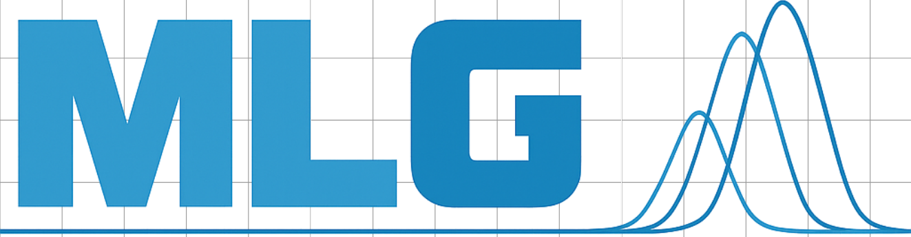
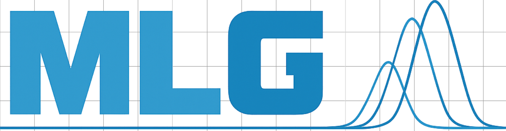
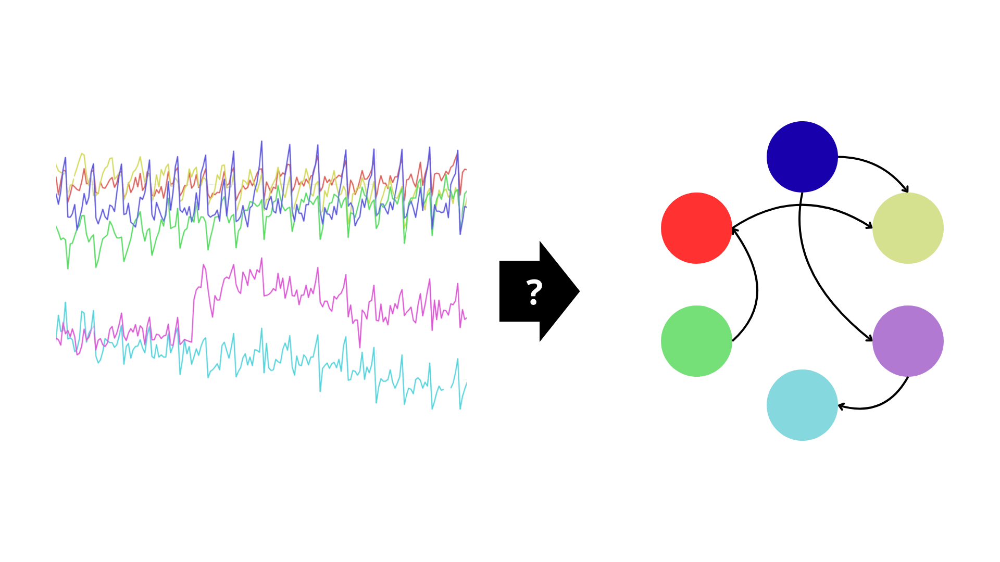
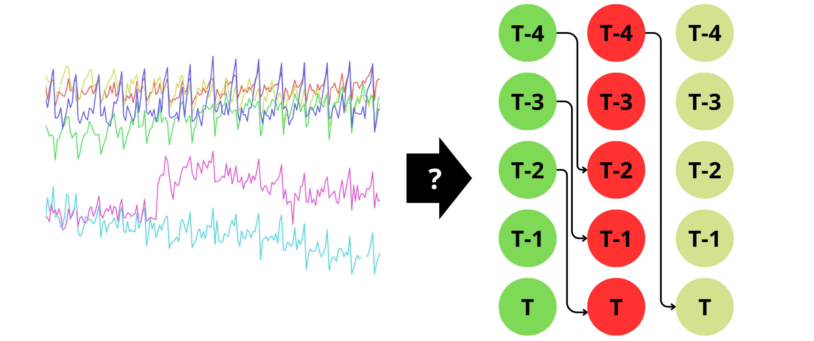
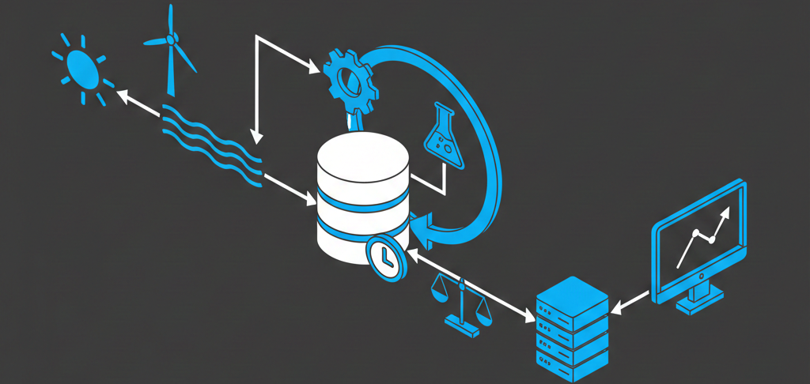

Les Jumeaux Numériques
et leur coût computationnel
Quand la réalité rencontre le virtuel
Université libre de Bruxelles - Machine Learning Group
Le Jumeau Numérique (DT)
Ce n'est pas juste une maquette 3D.
- Émule le système physique (PT)
- Explique ses comportements
- Anticipe les pannes (Predictive maintenance)
- Agit en retour sur le réel (Feedback loop)
Cadre du Projet & Leadership
Le projet EDITS est financé par le programme WEL-T (Walloon Excellence in Technology)
WEL Research Institute.
Sous la direction du Prof. Gianluca Bontempi, fondateur du MLG.
EDITS vise à transformer les Jumeaux Numériques en outils de décision interprétables et scalables pour l'industrie 4.0.
Le Projet EDITS (WEL-T)
Le défi actuel des Jumeaux Numériques ?
Ils manquent souvent d'intelligence.
Notre objectif :
- Calibration avec des flux de données massifs.
- Rendre l'IA interprétable (pas de boîte noire).
- Permettre le raisonnement contrefactuel.
Permettre le raisonnement contrefactuel
Pour piloter un système (ville, usine, réseau électrique), il faut répondre à :
"Que se passe-t-il SI... ?"
- Si je ferme cette route ? (Intervention)
- Si j'avais augmenté la maintenance ? (Contrefactuel)
C'est le domaine de la Causalité.
Sans causalité, un Jumeau Numérique est juste un observateur passif.
Concrètement : EnergyTwin

Jumeau numérique d'un parc éolien.
- Données : 150 variables/turbine x 10 ans x 10 min.
- Défi : Prédire les pannes via l'analyse causale d'événements rares.
- Besoin : Rejouer le passé (Backtesting) avec des configurations différentes (Contrefactuels).
Imaginons un étude causal...
Pour un système à N variables :
Il faut tester si un lien est causale pour chaque paire dans les deux sens NxN .
Variables
Tests potentiels
Variables
Tests potentiels par Lag
Uniquement si nous nous limitons à des relations non temporelles.
Nous voulons souvent être plus précis...
Tests potentiels pour 24h (144 x 10min)
La découverte causale a un prix
Passer de la donnée brute au graphe causal est coûteux.
1. L'approche classique
Tests statistiques (Granger, PCMCI).
Problème : Explosion combinatoire quadratique ou pire.
2. L'approche EDITS (TD2C)
Transformer la causalité en problème de Pattern Recognition supervisé.
Problème : Nécessite l'entraînement sur des milliards de scénarios synthétiques.
3. Foundation Models
Entraîner un "GPT de la causalité" capable de généraliser.
Conséquence : Besoin massif de GPU.
Le "Mur" Computationnel
Un Jumeau Numérique réaliste, c'est :
- Des flux de données en temps réel (Streaming).
- Une haute dimensionnalité (> 150 capteurs pour une éolienne).
- Une mise à jour constante des modèles (Online Learning).
LYRA / HYPERION
- Entraînement des modèles de substitution (Surrogates)
- Découverte causale à large échelle
- Simulation Monte-Carlo des scénarios "What-if"
Conclusion
Le projet WEL-T EDITS vise à créer des Jumeaux Numériques de nouvelle génération.
La réussite scientifique dépend de la convergence entre :
1. L'excellence algorithmique (MLG)
2. La puissance de feu infrastructurelle (Lyra/Hyperion)
Merci
Questions ?
Gian Marco Paldino
Machine Learning Group, ULB